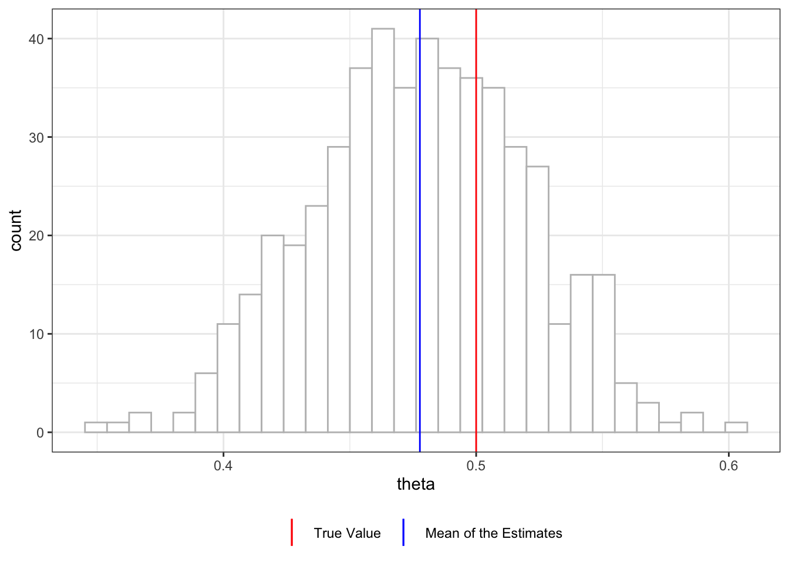

library(data.table)
library(magick)
library(fixest)
library(DoubleML)
library(tidyverse)
library(mlr3)
library(parallel)
library(mlr3learners)
library(ggbrace)
library(rsample)
library(MASS)
library(ranger)10 Double Machine Learning
One of the most important ideas of the recent development of causal machine learning (CML) methods originate from Chernozhukov et al. (2018), which proposed Double/Debiased ML methods. In this section, we go over those key ideas that are at the heart of many other important CML methods we will learn later. We then learn various models you can estimate using the R and Python DoubleML package (P. Bach et al. 2021; Philipp Bach et al. 2022).
What you will learn
- How double/debiased machine learning works
- avoiding regularlization bias through orthogonalization
- avoiding over-fitting bias through cross-fitting
- Mechanics of DML
- method of moment
- score function
- cross-fitting
- How to estimate ATE under conditional unconfoundedness using
DoubleMLPLR()and under confoundedness usingDoubleMLPLIV().
Preferable background knowledge
- how to use
mlr3(see Chapter 14) - idea of method of moment
- causal diagram
10.1 DML: the basic idea
10.1.1 Problem Setting
Throughout this section, we are interested in estimating the following econometric model , which is called a partially linear regression model (PLR).
We try to follow the notations of Chernozhukov et al. (2018) as much as possible.
\[ \begin{aligned} y = \theta d + g_0(X) + \mu \\ d = m_0(X) + \eta \end{aligned} \]
Partially linear regression model is a class of models where some of the variables are linear in parameter (here, \(\theta d\)) and the rest of the variables are modeled non-parametrically (here, \(g_0(X)\)).
Your sole interest is in estimating \(\theta\): the impact of the treatment (\(d\)). \(g_0(X)\) is the impact of a collection of variables \(X\). \(m_0(X)\) expresses how \(X\) affects the treatment status, \(d\). \(d\) may be binary or continuous. $
Assumptions on the error terms
- \(E[\mu|D,X] = 0\)
- \(E[\eta|X] = 0\)
Note
The treatment effect is assumed to be constant irrespective of the value of \(X\). So, the treatment effect is not heterogeneous. We will cover heterogeneous treatment effect estimation later.
Terminology alert
\(g_0(X)\) and \(m_0(X)\) are called nuisance functions because knowing them is not the ultimate goal. We are only interested in controlling for them to estimate \(\theta\) accurately.
10.1.2 An intuitive, yet naive approach
Packages to load for replication
Consider the estimating equation of interest below.
\[ \begin{aligned} y = \theta d + g_0(X) + \mu \end{aligned} \tag{10.1}\]
Subtracting \(g_0(x)\) from both sides,
\[ \begin{aligned} y - g_0(x) = \theta d + \mu \end{aligned} \]
So, if we know \(g_0(X)\), then we can simply regress \(y - g_0(x)\) on \(d\). Of course, we do not know \(g_0(X)\), so we need to estimate \(g_0(x)\). Let \(\hat{g}_0(x)\) denote \(g_0(x)\) estimated by any appropriate machine learning method. Then, we can regress \(y - \hat{g}_0(x)\) on \(d\) to estimate \(\theta\) using OLS. Mathematically, it can be written as follows:
\[ \begin{aligned} \hat{\theta} = (\frac{1}{n}\sum_{i=1}^N d_i d_i)^{-1}\frac{1}{n}\sum_{i=1}^N d_i (y_i - \hat{g}_0(X_i)) \end{aligned} \]
Now, subtracting \(\hat{g}_0(x)\) from both sides of Equation 10.1,
\[ \begin{aligned} y - \hat{g}_0(x) = \theta d + (g_0(x) - \hat{g}_0(x) + \mu) \end{aligned} \]
So, as long as \(d\) is not correlated with \(g_0(x) - \hat{g}_0(x) + \mu\), then the regression of \(y - \hat{g}_0(x)\) on \(d\) should work. Unfortunately, this approach turns out to be naive and suffer from bias in general (Chernozhukov et al. 2018).
As a way to implement this naive approach, consider the following procedures.
- Step 1: Estimate \(g_0(X)\) and then subtract the fitted value of \(g_0(X)\) from \(y\).
- Step 1.1: Regress \(y\) on \(X\) to estimate \(E[y|X]\) and call it \(\hat{l}_0(x)\)
- Step 1.2: Regress \(d\) on \(X\) to estimate \(E[d|X]\) (\(m_0(X)\)), call it \(\hat{m}_0(x)\), and calculate \(\tilde{d} = d - \hat{m}_0(X)\).
- Step 1.3: Get an initial estimate of \(\theta\) using \[ \begin{aligned} \hat{\theta}_{init} = (\frac{1}{n}\sum_{i=1}^N \tilde{d}_i \tilde{d}_i)^{-1}\frac{1}{n}\sum_{i=1}^N \tilde{d}_i (y_i - \hat{l}_0(X_i)) \end{aligned} \tag{10.2}\]
- Step 1.4: Regress \(y_i - \hat{\theta}_{init}d\) on \(X\) to estimate \(g_0(X)\) and call it \(\hat{g}_0(X)\).
- Step 2: Regress \(y - \hat{g}_0(X)\) on \(d\) using OLS. Or equivalently, use the following formula \[ \begin{aligned} \hat{\theta} = (\frac{1}{n}\sum_{i=1}^N d_i d_i)^{-1}\frac{1}{n}\sum_{i=1}^N d_i (y_i - \hat{g}_0(X_i)) \end{aligned} \tag{10.3}\]
To demonstrate the bias problem, we work on the following data generating process used in the user guide for the DoubleML package.
\[ \begin{aligned} y_i = 0.5 d_i + \frac{exp(x_{i,1})}{1 + exp(x_{i,1})} + \frac{1}{4}\cdot x_{i,3} + \mu_i \\ d_i = x_{i,1} + \frac{1}{4}\cdot\frac{exp(x_{i,3})}{1 + exp(x_{i,3})} \eta_i \end{aligned} \tag{10.4}\]
where \(\mu_i \sim N(0, 1)\) and \(\eta_i \sim N(0, 1)\). The error terms (\(\mu_i\) and \(\eta_i\)) are independent. In this data generating process, \(d\) is continuous (not binary) and its effect on \(y\) is assumed to be linear.
We use the gen_data() function (defined on the right), which is a slightly generalized version of the make_plr_CCDDHNR2018() function from the DoubleML package.
gen_data() allows you to specify \(g_0(X)\) and \(m_0(X)\) unlike make_plr_CCDDHNR2018().
gen_data <- function(
g_formula = formula(~ I(exp(x1)/(1+exp(x1))) + I(x3/4)), # formula that defines m(x)
m_formula = formula(~ x1 + I(exp(x3)/(1+exp(x3))/4)), # formula that defines g(x)
te_formula = formula(~ I(0.5*d)), # formula that defines theta(x) * t
n_obs = 500,
n_vars = 20,
mu_x = 0,
vcov_x = NULL,
sigma = 1 # sd of the error term in the y equation
)
{
if (is.null(vcov_x)) {
vcov_x <- matrix(rep(0, n_vars^2), nrow = n_vars)
for (i in seq_len(n_vars)) {
vcov_x[i, ] <- 0.7^abs(i - seq_len(n_vars))
}
}
#=== draw from multivariate normal ===#
data <-
mvrnorm(n_obs, mu = rep(0, n_vars), Sigma = vcov_x) %>%
data.table() %>%
setnames(names(.), paste0("x", 1:n_vars))
#=== generate d ===#
if (m_formula == "independent") {
data[, d := rnorm(n_obs)]
} else {
data[, d := model.frame(m_formula, data = data) %>% rowSums() + rnorm(n_obs)]
}
#=== generate y ===#
data[, g := model.frame(g_formula, data = data) %>% rowSums()]
#=== generate treatment effect ===#
data[, te := model.frame(te_formula, data = data) %>% rowSums()]
#=== generate y ===#
data[, y := te + g + rnorm(n_obs, sd = sigma)]
return(data[])
}set.seed(782394)
training_data <- gen_data()It has 20 x variables (for \(X\)) along with d (treatment) and y (dependent variable). Only x1 and x3 are the relevant variables. The rest of \(X\) do not play any role in explaining either \(Y\) or \(d\). However, they are correlated with x1 and x3 and interfere with estimating the nuisance functions.
str(training_data)Classes 'data.table' and 'data.frame': 500 obs. of 24 variables:
$ x1 : num -0.364 1.115 0.733 1.882 0.479 ...
$ x2 : num -0.5296 0.1056 -0.0411 1.0817 0.6851 ...
$ x3 : num -0.6156 1.0599 0.0799 0.4634 0.1374 ...
$ x4 : num -0.352 0.987 0.805 1.24 1.404 ...
$ x5 : num -0.723 0.547 1.85 0.574 0.501 ...
$ x6 : num -1.366 1.275 2.695 0.526 1.395 ...
$ x7 : num -0.9908 0.7295 1.1006 0.0523 0.3603 ...
$ x8 : num -0.3203 0.4991 0.7414 -0.0727 -0.4202 ...
$ x9 : num 0.313 0.347 0.796 -1.268 -0.128 ...
$ x10: num 0.2812 -0.6702 0.9771 0.0751 0.2713 ...
$ x11: num 0.0656 -0.6435 1.5061 -0.8429 1.4138 ...
$ x12: num -0.383 0.825 2.299 -0.642 0.859 ...
$ x13: num 0.7852 -0.0489 0.3969 0.1613 0.299 ...
$ x14: num -0.869 -0.27 0.264 0.787 -0.44 ...
$ x15: num -0.92172 0.00569 0.04343 0.7545 0.20734 ...
$ x16: num -2.062 -0.898 0.655 0.995 1.561 ...
$ x17: num -2.325 0.187 -0.114 0.89 0.947 ...
$ x18: num -1.1131 -0.3046 -0.0297 0.1187 0.2166 ...
$ x19: num -0.83 -0.7797 -0.2592 0.9764 -0.0221 ...
$ x20: num -0.577 -1.162 1.126 0.693 1.119 ...
$ d : num -0.683 0.622 -1.909 -0.517 0.816 ...
$ g : num 0.256 1.018 0.695 0.984 0.652 ...
$ te : num -0.342 0.311 -0.955 -0.259 0.408 ...
$ y : num -0.0511 0.4342 0.7377 1.5015 1.5488 ...
- attr(*, ".internal.selfref")=<externalptr> 10.1.2.1 Step 1
Let’s now work on Step 1. We estimate \(g_0(X)\) using random forest (RF). As described above, this is a four-step process.
It does not have to be RF. Indeed, you can use any statistical methods in this step.
Step 1.1: Estimate \(l_0(X)\) by regressing \(y\) on \(X\).
#--------------------------
# Step 1.1
#--------------------------
rf_fitted_l0 <-
ranger(
y ~ .,
data = dplyr::select(training_data, c("y", starts_with("x"))),
mtry = 5,
num.trees = 132,
max.depth = 5,
min.node.size = 1
)
#=== fitted values ===#
l0_hat <- predict(rf_fitted_l0, data = training_data)$predictions
#=== create y - l0_hat ===#
training_data[, y_less_l := y - l0_hat]Step 1.2: Estimate \(m_0(X)\) by regressing \(d\) on \(X\).
#--------------------------
# Step 1.2
#--------------------------
rf_fitted_m0 <-
ranger(
d ~ .,
data = dplyr::select(training_data, c("d", starts_with("x"))),
mtry = 5,
num.trees = 378,
max.depth = 3,
min.node.size = 6
)
#=== fitted values ===#
m0_hat <- predict(rf_fitted_m0, data = training_data)$predictions
#=== create y - m0_hat ===#
training_data[, d_less_m := d - m0_hat]Figure of d (treatment variable) plotted against m0_hat (\(\hat{m}_0(X)\)).
Code
ggplot(training_data) +
geom_point(aes(y = d, x = m0_hat)) +
geom_abline(slope = 1, color = "red") +
theme_bw()
Step 1.3: Get an initial estimate of \(\theta\) using Equation 10.2.
#--------------------------
# Step 1.2
#--------------------------
theta_init <- training_data[, sum(d_less_m * y_less_l) / sum(d_less_m * d_less_m) ]Step 1.4: Regress \(y - \theta_{init}d\) on \(X\) to fit \(g_0(X)\).
#--------------------------
# Step 1.3
#--------------------------
#=== define y - treatment effect ===#
training_data[, y_less_te := y - theta_init * d]
#=== fit rf ===#
rf_fitted_g0 <-
ranger(
y_less_te ~ .,
data = dplyr::select(training_data, c("y_less_te", starts_with("x"))),
mtry = 5,
num.trees = 132,
max.depth = 5,
min.node.size = 1
)
#=== fitted values ===#
g0_hat <- predict(rf_fitted_g0, data = training_data)$predictions
#=== create y - g0 ===#
training_data[, y_less_g := y - g0_hat]Figure 10.1 plots true \(g_0(X)\) (g) against \(\hat{g}_0(X)\) (g0_hat). As you can see, \(\hat{g}_0(X)\) is a bit biased.
Code
ggplot(training_data) +
geom_point(aes(y = g, x = g0_hat)) +
geom_abline(slope = 1, color = "red") +
theme_bw() +
coord_equal()
10.1.2.2 Step 2
Finally, we regress \(y - \hat{g}_0(X)\) on \(d\) (or equivalently using Equation 10.3).
(
theta_hat <- lm(y_less_g ~ d, data = training_data)$coefficient["d"]
) d
0.5372165 So, in this instance, we get an estimate of \(\theta\) that is a bit lower than the true value of \(\theta\). Let’s repeat this process many times to see how this procedure performs on average.
Code
fit_m0 <- function(training_data, mtry = 10) {
rf_fitted_m0 <-
ranger(
d ~ .,
data = dplyr::select(training_data, c("d", starts_with("x"))),
# mtry = 5,
mtry = mtry,
# num.trees = 378,
num.trees = 500,
max.depth = 3,
# min.node.size = 6
min.node.size = 10
)
return(rf_fitted_m0)
}
fit_l0 <- function(training_data, mtry = 12)
{
rf_fitted_l0 <-
ranger(
y ~ .,
data = dplyr::select(training_data, c("y", starts_with("x"))),
mtry = mtry,
# num.trees = 132,
num.trees = 500,
max.depth = 5,
# min.node.size = 1
min.node.size = 10
)
return(rf_fitted_l0)
}
#===================================
# Define a function that will get you g0_hat
#===================================
# this function will be used later
fit_g0 <- function(training_data, rf_fitted_m0, mtry_l = 12, mtry_g = 12) {
#--------------------------
# Step 1.1
#--------------------------
rf_fitted_l0 <- fit_l0(training_data, mtry_l)
#=== fitted values ===#
l0_hat <- predict(rf_fitted_l0, data = training_data)$predictions
#=== create y - l0_hat ===#
training_data[, y_less_l := y - l0_hat]
#--------------------------
# Step 1.2
#--------------------------
#=== fitted values ===#
m0_hat <- predict(rf_fitted_m0, data = training_data)$predictions
#=== create y - m0_hat ===#
training_data[, d_less_m := d - m0_hat]
#--------------------------
# Step 1.2
#--------------------------
theta_init <- training_data[, sum(d_less_m * y_less_l) / sum(d_less_m * d_less_m)]
#--------------------------
# Step 1.3
#--------------------------
#=== define y - treatment effect ===#
training_data[, y_less_te := y - theta_init * d]
#=== fit rf ===#
rf_fitted_g0 <-
ranger(
y_less_te ~ .,
data = dplyr::select(training_data, c("y_less_te", starts_with("x"))),
mtry = mtry_g,
# num.trees = 132,
num.trees = 500,
max.depth = 5,
# min.node.size = 1
min.node.size = 10
)
return(rf_fitted_g0)
}
#===================================
# Define a function that runs a single simulation and gets you theta_hat
#===================================
run_sim_naive <- function(i){
# training_data <- data[[i]] %>% data.table()
training_data <- gen_data()
rf_fitted_m0 <- fit_m0(training_data)
rf_fitted_g0 <- fit_g0(training_data, rf_fitted_m0)
g0_hat <- predict(rf_fitted_g0, data = training_data)$predictions
#=== create y - g0 ===#
training_data[, y_less_g := y - g0_hat]
theta_hat <- lm(y_less_g ~ d, data = training_data)$coefficient["d"]
# theta_hat <- training_data[, sum(d * y_less_g) / sum(d * d)]
return(theta_hat)
}
#===================================
# Repeat MC simulations 500 times
#===================================
theta_hats_apr1 <-
mclapply(
1:500,
run_sim_naive,
mc.cores = detectCores() / 4 * 3
) %>%
unlist() %>%
data.table(theta = .)
#===================================
# Plot the results
#===================================
ggplot(theta_hats_apr1) +
geom_histogram(aes(x = theta), color = "grey", fill = "white") +
theme_bw() +
geom_vline(aes(xintercept = 0.5,color = "True Value")) +
geom_vline(aes(xintercept = theta_hats_apr1[, mean(theta)], color = "Mean of the Estimates")) +
scale_color_manual(
values = c("True Value" = "red", "Mean of the Estimates" = "blue"),
name = ""
) +
guides(color = guide_legend(nrow = 1, byrow = TRUE)) +
theme(legend.position = "bottom")
Figure 10.2 shows the histogram of \(\hat{\theta}\) from 500 simulations. You can see that this procedure has led to consistent underestimation of the treatment effect (mean value of \(\hat{\theta}\) is 0.468). There are two sources of bias in this approach: regularization and over-fitting bias.
Note
- Regularization bias: the bias coming from bias in estimating \(g_0(X)\)
- Over-fitting bias: the bias coming from over-fitting \(g_0(X)\) and \(m_0(X)\) due to the fact that the same sample is used for \(g_0(X)\) and \(m_0(X)\) estimation and \(\theta\) estimation
Regularization bias is termed so because bias in estimating \(g_0(X)\) can occur when some form of regularization is implemented (e.g., lasso).
10.1.3 Overcoming the regularization bias
Regularization bias can be overcome by double-debiasing (orthogonalizing both \(d\) and \(y\)). Specifically,
- Step 1: Estimate \(g_0(X)\) and then subtract the fitted value of \(g_0(X)\) from \(y\)
- Step 2: Subtract \(\hat{m}_0(X)\) from \(d\) (\(\tilde{d} = d - \hat{m}_0(x)\))
- Step 3: Calculate \(\hat{\theta}\) based on the following formula
\[ \begin{aligned} \hat{\theta} = (\frac{1}{n}\sum_{i=1}^N \tilde{d}_i d_i)^{-1}\frac{1}{n}\sum_{i=1}^N \tilde{d}_i (y_i - \hat{g}_0(X_i)) \end{aligned} \]
The key difference from the previous approach is that this approach uses IV-like formula, where \(\tilde{d}\) is acting like an instrument.
For \(y = X\beta + \mu\) with instruments \(Z\), the IV estimator is \[ \begin{aligned} \hat{\beta} = (Z'X)^{-1}Z'y \end{aligned} \]
We have done Steps 1 and 2 already in the previous approach. So,
#--------------------------
# Step 3
#--------------------------
(
theta_hat <- training_data[, sum(d_less_m * y_less_g) / sum(d_less_m * d)]
)[1] 0.5325107Now, let’s repeat this 500 times.
Code
run_sim_dereg <- function(i)
{
training_data <- gen_data()
# training_data <- data[[i]] %>% data.table
rf_fitted_m0 <- fit_m0(training_data)
m0_hat <- predict(rf_fitted_m0, data = training_data)$predictions
#=== create d - m0_hat ===#
training_data[, d_less_m := d - m0_hat]
#=== get g0_hat ===#
rf_fitted_g0 <- fit_g0(training_data, rf_fitted_m0)
g0_hat <- predict(rf_fitted_g0, data = training_data)$predictions
#=== create y - g0 ===#
training_data[, y_less_g := y - g0_hat]
theta_hat <- training_data[, sum(d_less_m * y_less_g) / sum(d_less_m * d)]
return(theta_hat)
}
theta_hats_apr2 <-
mclapply(
1:500,
function(x) run_sim_dereg(x),
mc.cores = detectCores() / 4 * 3
) %>%
unlist() %>%
data.table(theta = .)
ggplot(theta_hats_apr2) +
geom_histogram(aes(x = theta), color = "grey", fill = "white") +
theme_bw() +
geom_vline(aes(xintercept = 0.5,color = "True Value")) +
geom_vline(aes(xintercept = theta_hats_apr2[, mean(theta)], color = "Mean of the Estimates")) +
scale_color_manual(
values = c("True Value" = "red", "Mean of the Estimates" = "blue"),
name = ""
) +
guides(color = guide_legend(nrow = 1, byrow = TRUE)) +
theme(legend.position = "bottom")
Figure 10.3 shows the distribution of \(\hat{\theta}\), which is centered about \(0.478\). The current approach still suffers from the so-called over-fitting bias(Chernozhukov et al. 2018). Let’s look at how we can overcome this bias next.
10.1.4 Overcoming the over-fitting bias
Over-fitting bias can be overcome by cross-fitting. First, the training data is split into \(K\)-folds just like K-fold cross-validation. Let’s denote them as \(I_1, \dots, I_k\). For example, for \(I_1\), the following steps are taken (Figure 10.4 provides a visual illustration):
- Step 1: Estimate \(\hat{g}_0(x)\) and \(\hat{m}_0(x)\) using the data from the other folds (\(I_2, \dots, I_K\)).
- Step 2: Estimate \(\hat{g}_0(x_i)\) and \(\hat{m}_0(x_i)\) for each \(i \in I_1\) and calculate \(\tilde{y}_i = y_i - \hat{g}_0(x_i)\) and \(\tilde{d}_i = d_i - \hat{m}_0(x_i)\).
- Step 3: Use the following formula to obtain \(\hat{\theta}\).
\[ \begin{aligned} \hat{\theta} = (\frac{1}{n}\sum_{i=1}^N \tilde{d}_i d_i)^{-1}\frac{1}{n}\sum_{i=1}^N \tilde{d}_i (y_i - \hat{g}_0(X_i)) \end{aligned} \tag{10.5}\]
This process is repeated for all the \(K\) folds, and then the the final estimate of \(\hat{\theta}\) is obtained as the average of \(\hat{\theta}\)s.
You can implement repeated K-fold cross-fitting using the DoublML package, which is not demonstrated here as it is very much similar in concept to repeated K-fold CV explained in Chapter 3.
talk about algorithm_2
Code
ggplot() +
#=== fold 1 ===#
geom_rect(
aes(xmin = 0, xmax = 10, ymin = 0, ymax = 2),
fill = "grey",
color = "black",
size = 1.2
) +
geom_rect(
aes(xmin = 0, xmax = 2.5, ymin = 0, ymax = 2),
fill = "black"
) +
#=== fold 2 ===#
geom_rect(
aes(xmin = 0, xmax = 10, ymin = 2.2, ymax = 4.2),
fill = "grey",
color = "black",
size = 1.2
) +
geom_rect(
aes(xmin = 2.5, xmax = 5, ymin = 2.2, ymax = 4.2),
fill = "black"
) +
#=== fold 3 ===#
geom_rect(
aes(xmin = 0, xmax = 10, ymin = 4.4, ymax = 6.4),
fill = "grey",
color = "black",
size = 1.2
) +
geom_rect(
aes(xmin = 5, xmax = 7.5, ymin = 4.4, ymax = 6.4),
fill = "black"
) +
#=== fold 4 ===#
geom_rect(
aes(xmin = 0, xmax = 10, ymin = 6.6, ymax = 8.6),
fill = "grey",
color = "black",
size = 1.2
) +
geom_rect(
aes(xmin = 7.5, xmax = 10, ymin = 6.6, ymax = 8.6),
fill = "black"
) +
geom_brace(aes(c(0, 7.4), c(8.7, 9.2)), inherit.data=F) +
annotate(
"text", x = 3.5, y = 9.7, parse = TRUE,
label = "'Find ' * hat(g)[0](x) * ' and ' * hat(m)[0](x) * ' from this data.'",
size = 6
) +
geom_curve(
aes(x = 2.2, xend = 8.5, y = 10.3, yend = 8.8),
arrow = arrow(length = unit(0.03, "npc")),
curvature = -0.3
) +
geom_curve(
aes(x = 3.4, xend = 8, y = 10.3, yend = 8.8),
arrow = arrow(length = unit(0.03, "npc")),
curvature = -0.3
) +
ylim(NA, 11) +
# coord_equal() +
theme_void()
Let’s code the cross-fitting procedure. We first split the data into 2 folds (\(K = 2\)).
\(K\) does not have to be 2.
(
data_folds <- rsample::vfold_cv(training_data, v = 2)
)# 2-fold cross-validation
# A tibble: 2 × 2
splits id
<list> <chr>
1 <split [250/250]> Fold1
2 <split [250/250]> Fold2Let’s cross-fit for fold 1.
split_1 <- data_folds[1, ]
#=== data for estimating g_0 and m_0 ===#
data_train <- analysis(split_1$splits[[1]])
#=== data for which g_0(x_i) and m_0(x_i) are calculated ===#
data_target <- assessment(split_1$splits[[1]]) First, we fit \(\hat{g}_0(x)\) and \(\hat{m}_0(x)\) using the data from the other folds.
#=== m0 ===#
m_rf_fit <- fit_m0(data_train)
#=== g0 ===#
g_rf_fit <- fit_g0(data_train, m_rf_fit)Next, we predict \(\hat{g}_0(x_i)\) and \(\hat{m}_0(x_i)\) for each \(i\) of fold 1 (the target dataset) and calculate \(\tilde{y}_i = y_i - \hat{g}_0(x_i)\) and \(\tilde{d}_i = d_i - \hat{m}_0(x_i)\).
data_orth <-
data_target %>%
#=== prediction of g_0(x_i) ===#
.[, g_0_hat := predict(g_rf_fit, data = .)$predictions] %>%
#=== orthogonalize y ===#
.[, y_tilde := y - g_0_hat] %>%
#=== prediction of m_0(x_i) ===#
.[, m_0_hat := predict(m_rf_fit, data = .)$predictions] %>%
#=== orthogonalize d ===#
.[, d_tilde := d - m_0_hat]Then, \(\hat{\theta}\) is obtained for this fold using Equation 10.5.
(
theta_hat <- data_orth[, sum(d_tilde * y_tilde) / sum(d_tilde * d)]
)[1] 0.5486855We can repeat this for all the folds (cross_fit() which finds \(\hat{\theta}\) for a particular fold is defined on the side).
cross_fit <- function(i, data_folds, mtry_l = 12, mtry_m = 10, mtry_g = 12)
{
#--------------------------
# Prepare data
#--------------------------
#=== ith split ===#
working_split <- data_folds[i, ]
#=== data for estimating g_0 and m_0 ===#
data_train <- analysis(working_split$splits[[1]])
#=== data for which g_0(x_i) and m_0(x_i) are calculated ===#
data_target <- assessment(working_split$splits[[1]])
#--------------------------
# Fit g0 and m0
#--------------------------
#=== m0 ===#
m_rf_fit <- fit_m0(data_train, mtry_m)
#=== g0 ===#
g_rf_fit <- fit_g0(data_train, m_rf_fit, mtry_l, mtry_g)
#--------------------------
# Get y_tilde and d_tilde
#--------------------------
data_orth <-
data_target %>%
#=== prediction of g_0(x_i) ===#
.[, g_0_hat := predict(g_rf_fit, data = .)$predictions] %>%
#=== orthogonalize y ===#
.[, y_tilde := y - g_0_hat] %>%
#=== prediction of m_0(x_i) ===#
.[, m_0_hat := predict(m_rf_fit, data = .)$predictions] %>%
#=== orthogonalize d ===#
.[, d_tilde := d - m_0_hat] %>%
.[, .(y_tilde, d_tilde, d)]
theta_cf <- data_orth[, sum(d_tilde * y_tilde) / sum(d_tilde * d)]
return(theta_cf)
}(
theta_hat <-
lapply(
seq_len(nrow(data_folds)), # loop over folds
function(x) cross_fit(x, data_folds) # get theta_hat
) %>%
unlist() %>%
mean() # average them
)[1] 0.5247844Okay, now that we understand the steps of this approach, let’s repeat this many times (get_theta_cf() that finds \(\hat{\theta}\) by cross-fitting is defined on the side).
get_theta_cf <- function(data_folds, mtry_l = 12, mtry_m = 10, mtry_g = 12){
theta_hat <-
lapply(
seq_len(nrow(data_folds)),
function(x) cross_fit(x, data_folds, mtry_l, mtry_m, mtry_g)
) %>%
unlist() %>%
mean()
return(theta_hat)
}Code
theta_hats_cf <-
mclapply(
1:500,
function(x) {
print(x)
training_data <- gen_data()
data_folds <- rsample::vfold_cv(training_data, v = 2)
theta_hat <- get_theta_cf(data_folds)
return(theta_hat)
},
mc.cores = detectCores() * 3 / 4
) %>%
unlist()
#=== visualize the results ===#
ggplot() +
geom_histogram(aes(x = theta_hats_cf), color = "grey", fill = "white") +
theme_bw() +
geom_vline(aes(xintercept = 0.5,color = "True Value")) +
geom_vline(aes(xintercept = mean(theta_hats_cf), color = "Mean of the Estimates")) +
scale_color_manual(
values = c("True Value" = "red", "Mean of the Estimates" = "blue"),
name = ""
) +
guides(color = guide_legend(nrow = 1, byrow = TRUE)) +
theme(legend.position = "bottom")
Figure 10.5 shows the distribution of \(\hat{\theta}\) with double-debiasing and cross-fitting. It is slightly biased in this instance (mean is 0.502), but the average \(\hat{\theta}\) is very close to the true parameter.
Important
Double/debiased (double orthogonalization) can help overcome the bias in \(\hat{\theta}\) that comes from the bias in estimating \(g_0(X)\).
Cross-fitting can help overcome the bias from estimating \(g_0(X)\), \(m_0(X)\), and \(\theta\) using the same data.
10.2 Models and implementation by DoubleML
In R, DoubleML is built on top of mlr3, which uses R6 classes provided by the R6 package. Since R6 implements encapsulated object-oriented programming like Python, DoubleML in R and Python work in a very similar manner. Here, we will use R for demonstrations.
10.2.1 Partially linear model
\[ \begin{aligned} y = \theta d + g_0(X) + \mu \\ d = m_0(X) + \eta \end{aligned} \tag{10.6}\]
Note
Assumptions on the error terms
- \(E[\mu|D,X] = 0\)
- \(E[\eta|X] = 0\)
- \(E[\eta\cdot \mu|D, X] = 0\)
Code
DiagrammeR::grViz(
paste0(
"
digraph {
graph [layout = circo, ranksep = 0.5]
node [shape = box]
Y [label = 'Y']
u [label = '\U03BC']
node [shape = box]
X [label = 'X']
T [label = 'T']
v [label = '\U03B7']
edge [minlen = 2]
{v, X}->T
{X, T}->Y
u->Y
}
"
)
)There are two ways to estimate \(\theta\) using DoublMLPLR(). They differ in how their score functions are defined. You pick either one of the two:
partialling-out: \([Y - l(X) - \theta(D-m(X))][D-m(X)]\)IV-type: \([Y - \theta D - g(X)][D-m(X)]\)
Since \(g(X)\) and \(m(X)\) themselves appear in the data generating process (Equation 10.7), it is clear what they are. However, it is not immediately clear what \(l(X)\) represents. \(l(X)\) refers to \(E[Y|X]\).
\[ \begin{aligned} l(X) = E[Y|X] & = E[\theta d + g_0(X) + \mu] \\ & = \theta E[d|X] + E[g_0(X)] + E[\mu|X] \\ & = \theta m_0(X) + g_0(X) \;\; \mbox{(by the assumptions on the error terms)}\\ \end{aligned} \]
Given this, the scores functions can be rewritten as:
partialling-out: \(\mu\cdot \eta\)IV-type: \(\mu\cdot \eta\)
Therefore, the two score functions are actually identical in meaning, but represented by different terms, which result in different equations to calculate \(\hat{\theta}\). Here are how \(\theta\) is identified for the two scores functions:
partialling-out
\[ \begin{aligned} E\large(\normalsize[Y - l(X) - \theta(D-m(X))][D-m(X)]\large)\normalsize = 0 \\ \theta = \frac{E[(Y - l(X))(D-m(X))]}{E[(D-m(X))(D-m(X))]} \end{aligned} \]
The empirical analog of this moment condition is
\[ \begin{aligned} \hat{\theta} = \frac{\sum_{i=1}^N (Y_i - l(X_i))(D_i-m(X_i))}{\sum_{i=1}^N (D_i-m(X_i))(D_i-m(X_i))} \end{aligned} \]
IV-type
\[ \begin{aligned} \hat{\theta} = \frac{\sum_{i=1}^N (Y_i - g(X_i))(D_i-m(X_i))}{\sum_{i=1}^N D_i(D_i-m(X_i))} \end{aligned} \]
\(D_i-m(X_i)\) is acting like an instrument.
The choice of the score function results in different steps to estimate \(\theta\) and what you need to supply to DoublMLPLR(). \(g_0(X)\) is estimated in several steps (see Section 10.1.2) as it needs to remove the effect of \(\theta D\) before estimating only \(g_0(X)\). \(l_0(X)\), however, is estimated by simply regressing \(Y\) on \(X\). In running DoublMLPLR(), there are three key options:
ml_l: ML method to use to estimate \(l(X)\)ml_m: ML method to use to estimate \(m(X)\)ml_g: ML method to use to estimate \(g(X)\)
When partialling-out is selected, you need to specify ml_l and ml_m. However, you do not need to specify the ml_g. When IV-type is used you need to specify all three. This is because estimating g(X) involves first estimating l(X) (see Section 10.1.2). So, the partialling-out option requires a smaller number of steps and easier to specify for the user.
Let’s implement DoublMLPLR() using a synthetic dataset that follows the DGP represented by Equation 10.4. We can use make_plr_CCDDHNR2018() to create such a dataset.
(
data <-
make_plr_CCDDHNR2018(
alpha = 0.5,
n_obs = 500,
dim_x = 20,
return_type = 'data.table'
)
) X1 X2 X3 X4 X5 X6
1: 1.2440476 1.64639297 0.71131792 0.4783044 0.008239645 0.4533324
2: 0.9023502 0.15267901 0.01064853 0.2088653 -0.305263506 0.7158397
3: -1.9637574 -1.87906651 -0.67356583 -0.5550050 0.029957814 0.5359109
4: -1.9718906 -0.82930335 -1.11817257 -1.6561757 -1.853304959 -0.5511951
5: -1.0273249 -0.69520796 -1.62652575 -0.8325634 -0.769455086 0.7121183
---
496: -0.5828880 0.03691634 -0.09796938 -0.2660888 0.256374614 0.8409559
497: 0.1310249 -0.04537018 -0.63309501 -1.9887410 -0.511560500 -0.6410372
498: 0.6988148 1.18801352 1.40573962 1.7227378 0.135727751 -0.9089638
499: 0.9334815 0.53835718 0.63176578 0.6217877 0.949987407 1.3972804
500: -1.8301636 -0.48985250 0.28928829 0.2081408 0.289517934 0.1162203
X7 X8 X9 X10 X11 X12
1: 0.2998599 0.08169994 -0.3034012 -0.41817280 -0.1684357 -0.5818317
2: 0.4535326 0.39097316 -0.1131795 -0.32836997 -0.4328069 0.3964901
3: 1.9876844 0.32706905 -0.3247179 -0.95800870 -0.6582622 -0.8564451
4: -1.1271986 0.01316699 -0.6730823 -0.27714289 -0.4080058 0.2292704
5: 0.9164861 0.25645093 0.8497441 1.43501126 1.0167186 -0.1490919
---
496: 1.9224220 -0.36454764 0.5100894 0.56865912 1.2143600 1.4910141
497: -0.3887281 0.19720732 -0.2633226 -0.36455774 -0.6915640 0.1428711
498: -0.4677247 0.09132417 1.3396831 0.12893152 0.5207629 0.3854993
499: 1.4887376 1.83162991 1.0472136 1.52179830 1.8261050 2.2777564
500: 1.2296010 0.99825727 1.2843710 -0.08255473 -0.2282313 -0.4273543
X13 X14 X15 X16 X17 X18
1: 0.6359233 0.6519038 0.8225963 1.4501328 1.3638703 2.3590094
2: 0.4119444 0.8873855 0.4601086 0.8426136 1.1745062 1.0474801
3: -1.7953205 -2.7288900 -1.8070682 -2.3540323 -1.0996324 -0.4669641
4: 0.6332562 -1.5151797 -0.5069169 -0.3316435 -0.5820351 -1.1698090
5: 0.3762819 0.2109936 1.5015694 0.7507966 0.4815073 0.4143088
---
496: 0.7537537 0.5242330 1.0652588 2.2025996 1.3431624 0.4493184
497: -0.5253672 0.1851662 0.1890410 -1.1936561 -2.0104705 -1.6484655
498: 0.3943351 -1.0036494 0.2384225 -0.1725888 0.8901573 0.3837909
499: 3.3185716 1.9115865 1.6692008 0.3438597 -0.1976231 0.3944083
500: 0.5623116 0.8880912 1.5738437 1.2236440 1.8337886 2.8762545
X19 X20 y d
1: 2.15034400 1.9143797 1.8599237 1.2501768
2: 0.94456253 -0.4795718 2.3923080 2.1841305
3: -0.06033539 0.5126436 -0.9123374 -1.4574737
4: -1.12264600 -0.3507258 -1.7675132 -2.9801900
5: 0.08113000 -1.6986236 -1.7201920 -0.8987789
---
496: -0.17389979 0.7992646 0.2055072 -1.3320553
497: -2.00535182 -0.9286602 -0.2724589 -1.6061591
498: 1.25943944 0.5382165 0.4598890 0.4722447
499: -0.67025460 -0.4495312 0.4208797 0.4633706
500: 1.44951329 0.3391455 -1.7206897 -3.5137542Note that the treatment variable is continuous in this dataset.
We first need to create a DoubleMLData object from the train data using DoubleMLData$new(). Specify the dependent variable using the y_col option and the treatment variable(s) by d_cols. The rest of the variables in the dataset provided will be regarded as covariates.
(
obj_dml_data <-
DoubleMLData$new(
data,
y_col = "y",
d_cols = "d"
)
)================= DoubleMLData Object ==================
------------------ Data summary ------------------
Outcome variable: y
Treatment variable(s): d
Covariates: X1, X2, X3, X4, X5, X6, X7, X8, X9, X10, X11, X12, X13, X14, X15, X16, X17, X18, X19, X20
Instrument(s):
No. Observations: 500Now, let’s specify ml_l, ml_m, and ml_g. The DoubleML follows mlr3 (see Chapter 14 for how to use mlr3).
(
ml_l <-
lrn(
"regr.ranger",
num.trees = 500,
mtry = 15,
min.node.size = 5
)
)<LearnerRegrRanger:regr.ranger>
* Model: -
* Parameters: num.threads=1, num.trees=500, mtry=15, min.node.size=5
* Packages: mlr3, mlr3learners, ranger
* Predict Type: response
* Feature types: logical, integer, numeric, character, factor, ordered
* Properties: hotstart_backward, importance, oob_error, weightsLet’s use the same ML method for ml_m and ml_g (you can use any appropriate ML methods). We can simply use the clone() method to replicate ml_l.
ml_m <- ml_l$clone()
ml_g <- ml_l$clone()We now set up the DoubleMLPLR estimator by providing a DoubleMLData and ML methods. By default, score is set to "partialling out", so we do not need to provide ml_g. The apply_cross_fitting option is set to TRUE by default.
dml_plr_obj <- DoubleMLPLR$new(obj_dml_data, ml_l, ml_m)We can fit the model by invoking fit() on dml_plr_obj.
dml_plr_obj$fit()INFO [15:36:23.440] [mlr3] Applying learner 'regr.ranger' on task 'nuis_l' (iter 5/5)
INFO [15:36:23.910] [mlr3] Applying learner 'regr.ranger' on task 'nuis_l' (iter 3/5)
INFO [15:36:24.368] [mlr3] Applying learner 'regr.ranger' on task 'nuis_l' (iter 1/5)
INFO [15:36:24.814] [mlr3] Applying learner 'regr.ranger' on task 'nuis_l' (iter 2/5)
INFO [15:36:25.267] [mlr3] Applying learner 'regr.ranger' on task 'nuis_l' (iter 4/5)
INFO [15:36:26.005] [mlr3] Applying learner 'regr.ranger' on task 'nuis_m' (iter 1/5)
INFO [15:36:26.458] [mlr3] Applying learner 'regr.ranger' on task 'nuis_m' (iter 4/5)
INFO [15:36:26.904] [mlr3] Applying learner 'regr.ranger' on task 'nuis_m' (iter 3/5)
INFO [15:36:27.348] [mlr3] Applying learner 'regr.ranger' on task 'nuis_m' (iter 5/5)
INFO [15:36:27.797] [mlr3] Applying learner 'regr.ranger' on task 'nuis_m' (iter 2/5) See the results with print(). You can see \(\hat{\theta}\) at the bottom.
print(dml_plr_obj)================= DoubleMLPLR Object ==================
------------------ Data summary ------------------
Outcome variable: y
Treatment variable(s): d
Covariates: X1, X2, X3, X4, X5, X6, X7, X8, X9, X10, X11, X12, X13, X14, X15, X16, X17, X18, X19, X20
Instrument(s):
No. Observations: 500
------------------ Score & algorithm ------------------
Score function: partialling out
DML algorithm: dml2
------------------ Machine learner ------------------
ml_l: regr.ranger
ml_m: regr.ranger
------------------ Resampling ------------------
No. folds: 5
No. repeated sample splits: 1
Apply cross-fitting: TRUE
------------------ Fit summary ------------------
Estimates and significance testing of the effect of target variables
Estimate. Std. Error t value Pr(>|t|)
d 0.52331 0.04536 11.54 <2e-16 ***
---
Signif. codes: 0 '***' 0.001 '**' 0.01 '*' 0.05 '.' 0.1 ' ' 1If you are using IV-type, then you need to provide ml_g as well like below.
#=== set up ===#
dml_plr_obj_iv <-
DoubleMLPLR$new(
obj_dml_data,
ml_l,
ml_m,
ml_g,
score = "IV-type"
)
#=== fit ===#
dml_plr_obj_iv$fit()INFO [15:36:28.431] [mlr3] Applying learner 'regr.ranger' on task 'nuis_l' (iter 2/5)
INFO [15:36:28.899] [mlr3] Applying learner 'regr.ranger' on task 'nuis_l' (iter 4/5)
INFO [15:36:29.375] [mlr3] Applying learner 'regr.ranger' on task 'nuis_l' (iter 1/5)
INFO [15:36:29.825] [mlr3] Applying learner 'regr.ranger' on task 'nuis_l' (iter 3/5)
INFO [15:36:30.284] [mlr3] Applying learner 'regr.ranger' on task 'nuis_l' (iter 5/5)
INFO [15:36:30.895] [mlr3] Applying learner 'regr.ranger' on task 'nuis_m' (iter 1/5)
INFO [15:36:31.339] [mlr3] Applying learner 'regr.ranger' on task 'nuis_m' (iter 5/5)
INFO [15:36:31.790] [mlr3] Applying learner 'regr.ranger' on task 'nuis_m' (iter 4/5)
INFO [15:36:32.237] [mlr3] Applying learner 'regr.ranger' on task 'nuis_m' (iter 2/5)
INFO [15:36:32.683] [mlr3] Applying learner 'regr.ranger' on task 'nuis_m' (iter 3/5)
INFO [15:36:33.289] [mlr3] Applying learner 'regr.ranger' on task 'nuis_g' (iter 5/5)
INFO [15:36:33.750] [mlr3] Applying learner 'regr.ranger' on task 'nuis_g' (iter 4/5)
INFO [15:36:34.216] [mlr3] Applying learner 'regr.ranger' on task 'nuis_g' (iter 3/5)
INFO [15:36:34.686] [mlr3] Applying learner 'regr.ranger' on task 'nuis_g' (iter 2/5)
INFO [15:36:35.148] [mlr3] Applying learner 'regr.ranger' on task 'nuis_g' (iter 1/5) #=== print the results ===#
print(dml_plr_obj_iv)================= DoubleMLPLR Object ==================
------------------ Data summary ------------------
Outcome variable: y
Treatment variable(s): d
Covariates: X1, X2, X3, X4, X5, X6, X7, X8, X9, X10, X11, X12, X13, X14, X15, X16, X17, X18, X19, X20
Instrument(s):
No. Observations: 500
------------------ Score & algorithm ------------------
Score function: IV-type
DML algorithm: dml2
------------------ Machine learner ------------------
ml_l: regr.ranger
ml_m: regr.ranger
ml_g: regr.ranger
------------------ Resampling ------------------
No. folds: 5
No. repeated sample splits: 1
Apply cross-fitting: TRUE
------------------ Fit summary ------------------
Estimates and significance testing of the effect of target variables
Estimate. Std. Error t value Pr(>|t|)
d 0.54946 0.04565 12.04 <2e-16 ***
---
Signif. codes: 0 '***' 0.001 '**' 0.01 '*' 0.05 '.' 0.1 ' ' 110.2.2 Partially linear IV model
When using observational data, it is rarely the case that conditional unconfoundedness of the treatment is satisfied. In such a case, you may want to consider a DML-IV approach implemented by DoubleMLPLIV(). Just like IV for linear models, finding the right instrument is critical for the DML-IV approach to be consistent.
\[ \begin{aligned} y = \theta d + g_0(X) + \mu \\ Z = m_0(X) + \varepsilon \\ d = r_0(X) + \eta \end{aligned} \tag{10.7}\]
When \(\varspsilon\) and \(\mu\) are correlated, DoubleMLPLR() is inconsistent. However, as long as the following assumptions are satisfied, DoubleMLPLIV() is consistent.
Note
Assumptions on the error terms
- \(E[\mu|Z,X] = 0\)
- \(E[\varepsilon|X] = 0\)
- \(E[\varepsilon\cdot \mu|Z, X] = 0\)
Here is the causal diagram for the partially linear model of interest. As you can see, the treatment variable \(T\) is confounded as \(\mu\) affects both \(Y\) and \(T\) (through \(\eta\)).
Code
DiagrammeR::grViz(
paste0(
"
digraph {
graph [ranksep = 0.6]
node [shape = box]
Y [label = 'Y']
X [label = 'X']
T [label = 'T']
Z [label = 'Z']
varep [label = '\U03B5']
mu [label = '\U03BC']
eta [label = '\U03B7']
edge [minlen = 2]
X->Y
T->Y
Z->T
X->T
X->Z
varep->Z
mu->{Y, eta}
eta->{T, mu}
{ rank = same; Y; Z; varep}
{ rank = same; X; T; mu}
}
"
)
)Just like DoublMLPLR(), there are two ways to estimate \(\theta\) using DoublMLPLIV(). The two score functions are:
partialling-out: \([Y - l(X) - \theta(D-r(X))][Z-m(X)]\)IV-type: \([Y - \theta D - g(X)][Z-m(X)]\)
, where \(r(X) = E[D|X]\). So, \(r(X)\) is the same as \(m(X)\) in the partially line model case. \(m(X)\) represents \(E[Z|X]\) in the IV model.
Let \(\tilde{Z}\), \(\tilde{D}\), \(\tilde{Y}_l\), and \(\tilde{Y}_g\) denote \(Z-m(X)\), \(D-r(X)\), \(Y-l(X)\), and \(Y-g(X)\), respectively.
partialling-out: \(\theta = (\tilde{Z}'\tilde{D})^{-1}\tilde{Z}\tilde{Y}_l\)IV-type: \(\theta = (\tilde{Z}'D)^{-1}\tilde{Z}\tilde{Y}_g\)
10.3 Suggested Exercises
References
Bach, P., V. Chernozhukov, M. S. Kurz, and M. Spindler. 2021. “DoubleML – An Object-Oriented Implementation of Double Machine Learning in R.” https://arxiv.org/abs/2103.09603.
Bach, Philipp, Victor Chernozhukov, Malte S. Kurz, and Martin Spindler. 2022. “DoubleML – An Object-Oriented Implementation of Double Machine Learning in Python.” Journal of Machine Learning Research 23 (53): 1–6. http://jmlr.org/papers/v23/21-0862.html.
Chernozhukov, Victor, Denis Chetverikov, Mert Demirer, Esther Duflo, Christian Hansen, Whitney Newey, and James Robins. 2018. “Double/debiased machine learning for treatment and structural parameters.” The Econometrics Journal 21 (1): C1–68. https://doi.org/10.1111/ectj.12097.